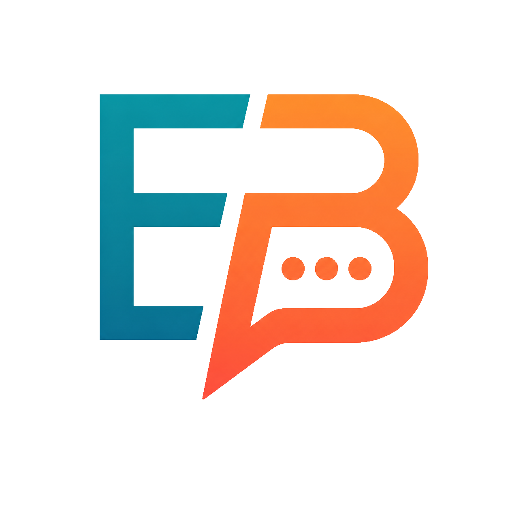

Architecting fault-tolerant software at the intersection of durable workflow engines (DBOS), high-throughput backend services in Go, and behavioral cognitive science platforms.
Designed with First-Principles thinking: high reliability, scalable microservices, and deep AI/ML integration.
An advanced, adaptive language learning platform engineered specifically for Vietnamese learners. Powered by behavioral cognitive models and a durable backend workflow engine (DBOS in Go), systematically breaking 4 core psychological barriers to language acquisition:
Hermeneutics AI Engine kết hợp toàn bộ 1848 khẩu quyết chính tông của danh sư Nghê Hải Hà (*Thiên Kỷ*), 1100+ cách cục và kho dữ liệu 8,77 triệu đoạn luận giải thuật số (56.6 GB). Tự động lập tinh bàn thiên văn, an sao và luận đoán đa chiều với tư duy thuật số chuẩn mực.
Module tự động hóa điều khiển máy thật (Bare-Metal Computer-Use) tích hợp bảo mật Zero-Trust. Kết nối trực tiếp vào Session 1 (`WinSta0\Default`), thực thi quy trình điều khiển trình duyệt qua Chrome DevTools Protocol (CDP), quản lý session persistence và phục hồi sau reboot.
Every system is designed from First Principles, avoiding fragile abstractions and prioritizing measurable resilience.
Horizontal & vertical scalability. Partitioned state, lock-free concurrency, and distributed DBOS steps capable of orchestrating multi-million user events.
Strict allocation reduction, zero-copy buffer pooling, pprof hot path profiling, and Redis caching ensuring sub-15ms P99 responses.
Durable execution that automatically survives server crashes, mid-flight restarts, and transient network hiccups without state duplication.
Multi-layered defense with Cloudflare 6-phase pipeline, automated SAST auditing, memory-safe practices, and strict credential isolation.
Right-sized cloud infrastructure, serverless on-demand video media generation (HyperFrames), and aggressive database indexing to eliminate waste.
Structured logging with `slog`, OpenTelemetry distributed tracing, Prometheus runtime metrics, and actionable live telemetry dashboards.
[0.001s] Primary Platform: EngBbq (engbbq.me)
[0.003s] Orchestration: DBOS Durable Workflow Engine (Go SDK)
[0.005s] Mobile Client: Flutter / Dart Clean Architecture
[0.008s] Storage Layer: MariaDB + Redis Cache + GCP BigQuery
[0.012s] AI Hermeneutics: Tianji Ziwei 8.77M Corpus (v4.0)
[0.015s] Host Execution: Bare-Metal Desktop Automation & CDP Controller